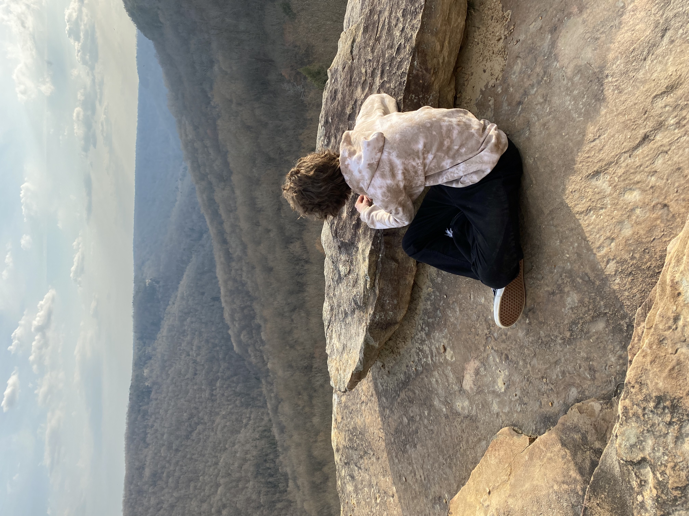

Over 30K Acres to Explore
South Cumberland State Park is located within four different Tennessee counties: Grundy, Franklin, Marion and Sequatchie. The park is composed of approximately 30,845 acres in nine separate areas and boasts some of the best hiking and backcountry camping in the region.
TN State Parks
From its beginning in 1937, Tennessee State Parks were established to protect and preserve the unique natural, cultural and historic resources of Tennessee. The public interest has also been served by a variety of benefits for citizens and communities produced by our state park system, promoting stronger communities and healthier citizens across the state through diverse resource-based recreation while conserving the natural environment for today and tomorrow – preserving authentic Tennessee places and spaces for future generations to enjoy.
 Explore
Explore
South Cumberland State Park Reservations
South Cumberland boasts over 90 miles of backpacking trails with 93 campsites, eight group sites, and one rustic lodge, the Hobbs Cabin. These campsites are located within 12 designated backcountry campgrounds across the Fiery Gizzard and Savage Gulf trail systems. South Cumberland encourages visitors to reserve their campsite early to ensure you have a site upon arrival. Reservations are required. Remember, follow all park rules and be prepared to have a rewarding backcountry experience.
 Reservations
Reservations
REI
At Recreational Equipment, Inc. (REI) we believe a life outdoors is a life well-lived! We believe that it’s in the wild, untamed and natural places that we find our best selves, so our purpose is to awaken a lifelong love of the outdoors, for all. Since 1938, we have been your local outdoor co-op, working to help you experience the transformational power of nature. We bring you top-quality gear and apparel, expert advice, rental equipment, inspiring stories of life outside and outdoor experiences to enjoy alone or share with your friends and family. And because we have no shareholders, with every purchase you make with REI, you are choosing to steward the outdoors, support sustainable business and help the fight for life outside.
 Gear Up!
Gear Up!